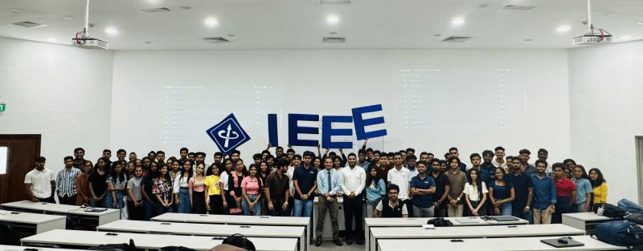
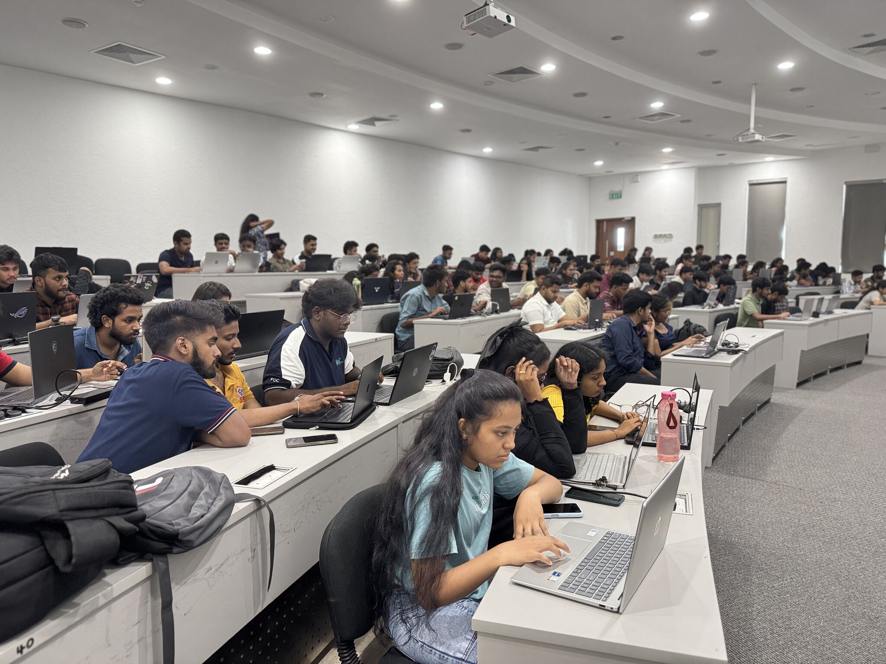

← Back to Portfolio
Participant — HackOops CTF Challenge, NSBM Green University


Participated in HackOops, an internal Capture The Flag (CTF) competition hosted at NSBM Green University. This event challenged participants to explore the world of cybersecurity through real-time offensive security problems in a gamified environment.
🧠 Challenge Highlights:
- Tackled tasks in cryptography, reverse engineering, web vulnerabilities, and forensics.
- Enhanced problem-solving under time pressure in a simulated cyber attack environment.
- Practiced using Linux terminal, hash crackers, and CTF tools for vulnerability discovery.
- Worked solo and in collaboration to capture flags from multiple difficulty tiers.
- Improved my ethical hacking and cybersecurity fundamentals in a competitive setting.